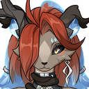
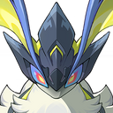
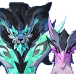
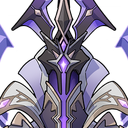
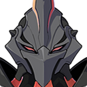
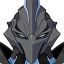
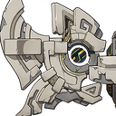
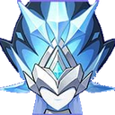

Spiral Abyss Floor 12 and Stygian Onslaught
Build teams for this cycleSpiral Abyss, Floor 12 · 2026-10-16 – 2026-11-15
First half
Chamber 12-1 · Lv. 95

Battle-Hardened Chimeric Volkodlak ArcherRES: Pyro -20%, Dendro 40%, Cryo 40%, Geo 40%
Chamber 12-2 · Lv. 98

Radiant MoonflyRES: Pyro 70%, Dendro 70%
Chamber 12-3 · Lv. 100

Chimeric Winged LionRES: Electro 50%, Anemo 50%
Ley Line Disorder: Characters' Stellar Glimmer reaction DMG increased by 75%.
Second half
Chamber 12-1 · Lv. 95

Iniquitous Baptist - Caller of Flood, Flame, and Fulmination
then

Shadowy Husk: Standard BearerRES: Pyro 30%, Phys. 30%
Shadowy Husk: DefenderRES: Cryo 30%, Phys. 30%
Chamber 12-2 · Lv. 98
- Battle-Hardened Elite Treasure HoarderRES: Phys. -20%
Chamber 12-3 · Lv. 100

Secret Source Automaton: Overseer Device
Ley Line Disorder: All party members gain a 75% Cryo DMG Bonus.
Stygian Onslaught · 2026-09-30 – 2026-11-03
- Battlefield 1: Battle-Hardened Domovoy SculptorAdvantage: Stellar Glimmer
- Battlefield 2: Secret Source Automaton: Overseer DeviceAdvantage: Cryo

Battlefield 3: Guardian Blade of Drifting SnowAdvantage: Electro, Anemo, Pyro, Stellar Glimmer